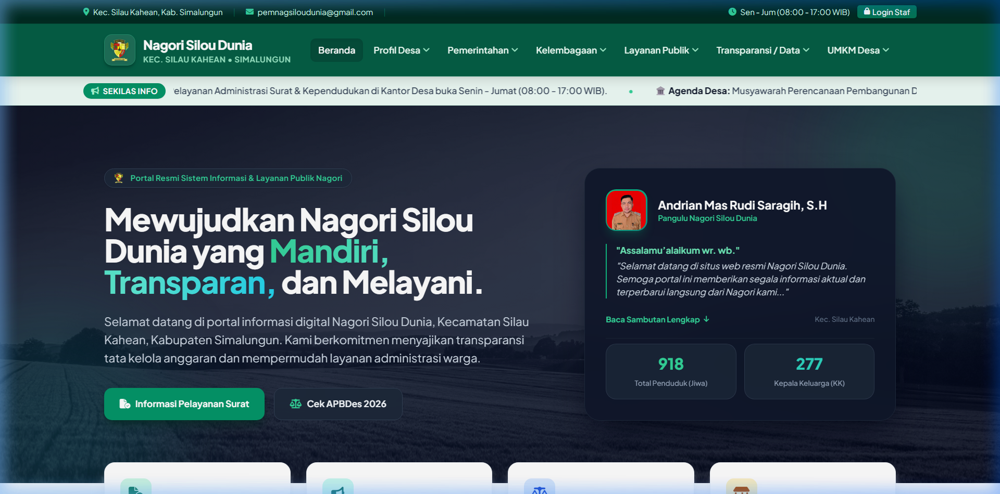

Web Application & Portal Desa
Sistem Informasi Pelayanan & Tata Kelola Desa
Portal resmi dan sistem informasi terintegrasi untuk Pemerintah Nagori Silou Dunia (Kec. Silau Kahean, Kab. Simalungun). Memfasilitasi transparansi anggaran APBDes interaktif dengan grafik real-time, pelayanan administrasi persuratan warga online, publikasi potensi ekonomi/UMKM, dan portal login manajemen staf.